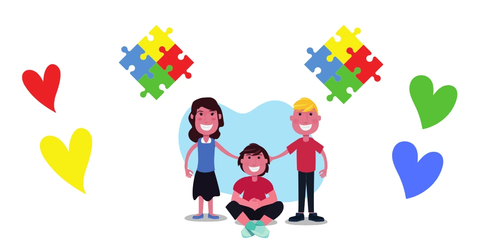
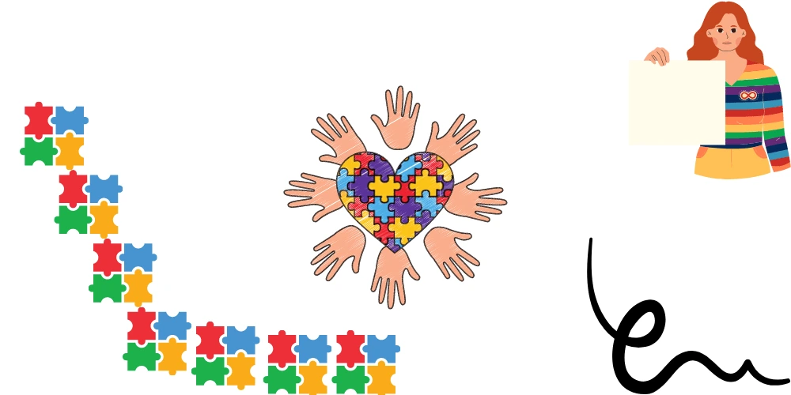

According to Autism Spectrum Australia, 1 in 70 Australians is affected with Autism. They have found that it is four times more common in boys. Firstly, understand why children with autism behave in certain ways is the first step. After that, you can work out with a therapist to change the behaviour and help children cope better.

Understanding Autism
ASD or “Autism” is a neurodevelopmental Mental Health condition. It is defined as where a child or an adult face some social challenges and demonstrates repetitive behaviours. The behaviours come across through his or her speech and way of communication.
However, everyone’s experience of Autism is different. How people with Autism come across depends on the care they get and home life. But an autistic person, just like anyone else, bears a distinct personality. They carry various strengths and weaknesses. It is important to know that people with autism have learning skills. They can range from highly skilled problem solving to severely challenged. Therefore, we should understand and offer tailored help.
Symptoms of Autism in Children and Adults may include:
- Struggle to maintain eye contact with another person.
- Pay intense attention to certain or particular objects or topics.
- High repetition of action over and over again.
- Sensitivity to touch, smell and sounds. A person with Autism may be highly sensitive to certain sensory stimuli.
- An autistic person may find it hard to maintain eye contact with someone talking to them.
- Avoids hugs, kisses and close affection.
- affection. Trouble or struggles with changes in daily routines.
Our Understanding of Autism Causes
Though yet unclear, researchers have found risk factors for autism. Events early in the pregnancy. Exposure to the virus, especially for expecting mothers in their first few months should be reduced. Ultimately, what a mother takes in during her pregnancy is shared together with her unborn child. Furthermore; parents age, family history and pre-term births are possible risk factors.
We don’t have a good understanding of autism. That is to say, some scientists see Autism as a group of different conditions. Others view it as a spectrum. A lack of understanding can make it hard for parents and carers. Therefore, more research into autism is needed.

Screening and Diagnosis of Children with Autism.
A doctor can assess and help our children with Autism through developmental screening. It measures a child’s speaking, movements and behaviour. Medical experts advise that a child screened as early as 9 months. If a child shows signs of autism, a complete evaluation is important. In other words, learning assessments and behavioural observations need to be done. After that, your doctor may also bring in the help of a psychiatrist, occupational therapist or psychologist as part of an assessment.
Treatment for autism may range from behavioural or communication therapy to promote positive growth and behaviour. However, occupational therapy can help with social behaviour and sensory blend therapy. Therefore, it can help with developing an autistic person’s reaction to touch, sight or sound. In addition, speech therapy can help improve an autistic person’s communication skills.
In conclusion, if your child experiences autism or if you sense that your child has autism, get help from your doctor. Your general practitioner can refer you to specialists in mental health. It can include psychiatry or psychology services. Do not delay calling your family doctor. Get the help you or your family need today.